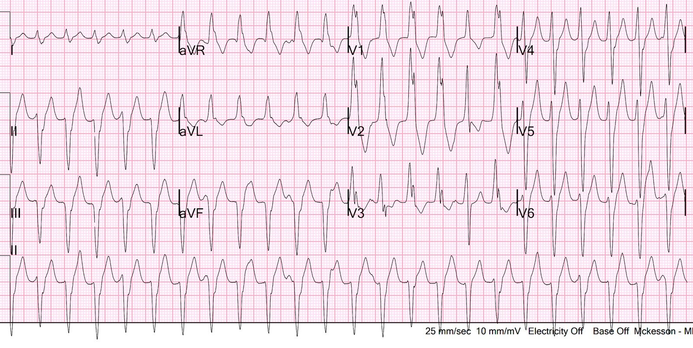
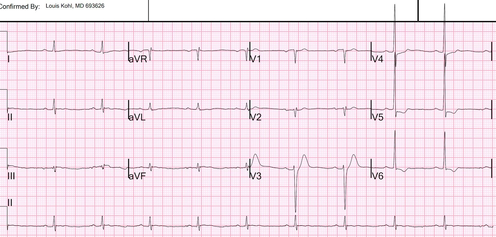
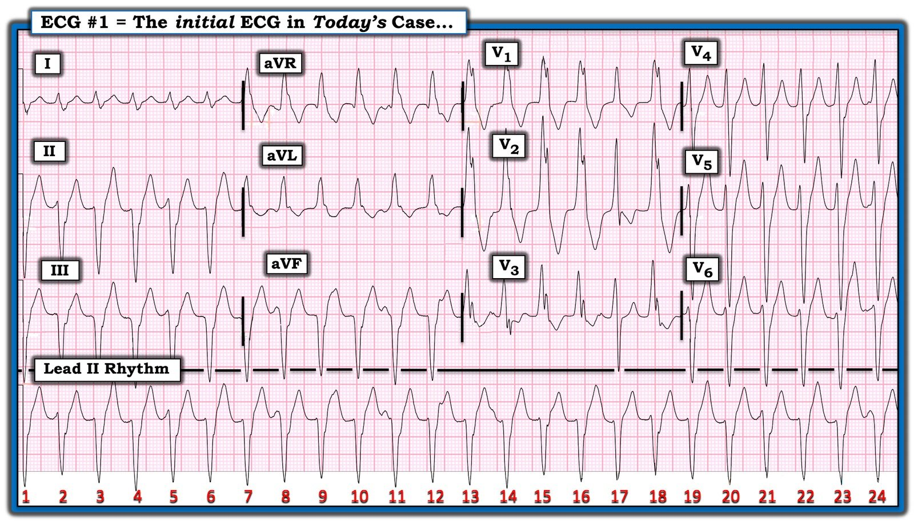
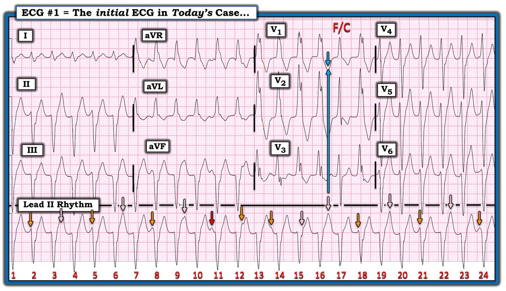
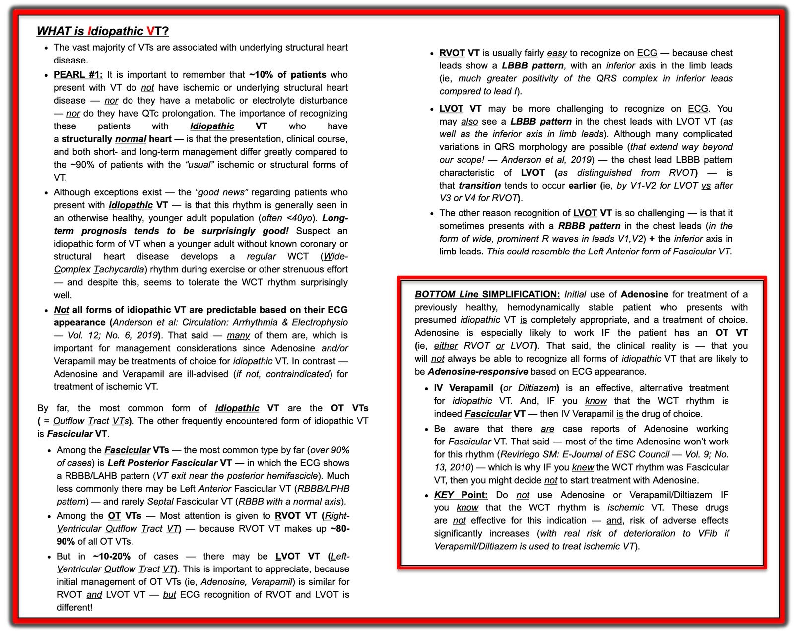

20/09/2023 — Bệnh nhân ở độ tuổi 50 bị nhịp nhanh QRS rộng đều: Làm gì nếu sốc điện chuyển nhịp không hiệu quả?
Bản dịch tiếng Việt của bài "A 50-something with Regular Wide Complex Tachycardia: What to do if electrical cardioversion does not work?" – Dr. Smith’s ECG Blog. Giữ nguyên toàn bộ 6 hình ảnh của bản gốc.
Ca bệnh do một người giấu tên gửi. Smith viết bài. Phần của Ken ở cuối bài rất xuất sắc.
Một bệnh nhân nam ngoài 50 tuổi đến viện vì hồi hộp đánh trống ngực khởi phát đột ngột 8 giờ trước, khi đang ngồi tại bàn làm việc. Cùng lúc đó anh có đau ngực sau xương ức kiểu nhói, đau đã hết nhưng hồi hộp vẫn còn. Trong 3 tháng qua, anh có những đợt đau ngực nhói từng lúc tương tự khi chạy bộ, nhưng không có lúc nghỉ. Tiền sử có đặt stent mạch vành cách đây 17 năm. Xem nhanh hồ sơ thấy lần siêu âm tim gần nhất năm 2018, với LV EF 67%, rối loạn vận động thành dưới “rất nhỏ”.
Điện tâm đồ đầu tiên tại khoa cấp cứu (ED):


Bạn nghĩ gì?
Bản ghi này được đưa cho tôi xem mà không kèm thông tin lâm sàng nào và tôi nói “Đây là VT cho đến khi chứng minh được điều ngược lại.” Tại sao tôi nói vậy?
1. Nó không giống RBBB hay LBBB; do đó, nếu có dẫn truyền lệch hướng (aberrancy) thì đó là dẫn truyền lệch hướng không điển hình
2. Tốc độ khởi đầu của QRS chậm (trong SVT kèm dẫn truyền lệch hướng, phần đầu của QRS đi qua các sợi Purkinje dẫn truyền nhanh nên hẹp). Hãy nhìn sóng R ở V4: phải mất 60 ms nó mới đạt đỉnh. Lẽ ra phải dưới 30 ms.
3. Nó có “trục Tây Bắc” (Northwest Axis, hướng về aVR). Tương ứng với điều đó, như Ken ghi nhận bên dưới, các chuyển đạo dưới âm 100%, điều hầu như không bao giờ xảy ra trong SVT.
4. Có sóng q 40 ms ở aVR.
5. 2 sóng R ở V1 thỏa tiêu chuẩn Brugada là sóng R thứ nhất lớn hơn sóng R thứ 2 (trong RBBB thật, sóng r thứ nhất nhỏ và sóng R’ thứ 2 lớn)
6. Có sóng S sâu ở V5 và V6.
7. Nhát thứ 15 (nhát thứ 2 ở V1-V3) có vẻ là một nhát hỗn hợp (fusion beat), điều gần như đủ để chẩn đoán VT.
8. Ken ghi nhận có phân ly nhĩ thất. Tôi thấy phân ly nhĩ thất trong VT rất khó phân biệt với nhiễu, vì trên các bản ghi nhịp nhanh lúc nào cũng có những gợn ngẫu nhiên.
Như vậy có RẤT NHIỀU đặc điểm của VT và hầu như không có đặc điểm nào của SVT kèm dẫn truyền lệch hướng.
Sau đó chúng ta phải xét đến dữ liệu lâm sàng ngoài điện tâm đồ, để có xác suất tiền nghiệm:
Trong tất cả các rối loạn nhịp nhanh QRS rộng, phần lớn là VT.
Nếu xét những người lớn tuổi có tiền sử nhồi máu cơ tim (anh ấy đã đặt stent), tỷ lệ đó còn cao hơn nhiều vì có mô sẹo đóng vai trò ổ khởi phát cho các PVC khởi động VT. Tiền sử rối loạn vận động thành dưới khẳng định điều này.
Diễn biến lâm sàng:
Siêu âm tim tại giường cho thấy co bóp tốt.
Kết luận được đưa ra là SVT kèm dẫn truyền lệch hướng (sai).
Lựa chọn là sốc điện chuyển nhịp có an thần.
Không dùng adenosine (nếu bạn tin đó là SVT thì đáng để thử). Tuy nhiên, đây không phải SVT. Nếu là VT, adenosine an toàn nhưng không hiệu quả.
Sốc điện 2 lần không hiệu quả. Miếng dán được đặt dưới hướng dẫn của siêu âm, nên chúng ở đúng vị trí.
Giờ làm gì?
Nếu bạn tin đó là SVT, hãy thử adenosine.
Nếu bạn không biết đó là rối loạn nhịp gì, hãy thử procainamide. Procainamide đã được chứng minh là tốt hơn và an toàn hơn amiodarone đối với VT (thử nghiệm ngẫu nhiên Procamio) VÀ nó cũng có tác dụng với SVT. Vì vậy tôi sẽ cho procainamide.
Cảnh báo: nếu đây là VT, thuốc chẹn kênh calci có thể gây sốc và tử vong.
Kết quả K là 3,6 mEq/L
Đã cho 2 g Mg tĩnh mạch. Đã cho 10 mEq K tĩnh mạch (dự kiến cho thêm 40 mEq KCl đường uống).
Heparin tiêm bolus (4000 đơn vị), rồi truyền liên tục
Kế hoạch kiểm soát tần số
Đã cho 25 mg diltiazem tĩnh mạch
Tần số tim = 143
Đã cho nhắc lại liều 25 mg diltiazem tĩnh mạch
Tần số tim = 143
Truyền diltiazem 10 mg/giờ trong ~20 phút
Tần số tim vẫn ở mức 140 – 155
Sau đó bệnh nhân bị sốc tim và siêu âm tim cho thấy co bóp kém
Đã cho liều nạp amiodarone. Bệnh nhân được đặt nội khí quản.
Sốc điện chuyển nhịp lần nữa thì thành công.


Đã hội chẩn tim mạch và bệnh nhân được chụp mạch vành, cho thấy bệnh ba nhánh mạch vành nặng, lan tỏa.
Các đợt đau thắt ngực trong vài tháng qua đã tiến triển nặng dần.
–Troponin I độ nhạy cao tăng, đạt đỉnh 2900 ng/L.
–Siêu âm tim cản âm bằng bọt khí chính thức cho thấy EF 35% với vô động thành trước, trước bên và dưới bên.
–Chụp mạch vành cho thấy bệnh ba nhánh mạch vành nặng, lan tỏa.
–Bệnh nhân sẽ cần phẫu thuật bắc cầu chủ vành (CABG)
Những điểm cần học:
1. Phải tránh dùng thuốc chẹn kênh calci trong VT (trừ khi đó là VT phân nhánh (fascicular VT), loại có hình dạng khác. Hãy đọc bài này:
Idiopathic Ventricular Tachycardias for the EM Physician (Nhịp nhanh thất vô căn dành cho bác sĩ cấp cứu)
2. Xác suất tiền nghiệm: Ngay cả trước khi có điện tâm đồ, một bệnh nhân có tiền sử đặt stent mạch vành có 90% khả năng nhịp nhanh QRS rộng của anh ta là VT.
3. VT có thể hoàn toàn ổn định huyết động nếu bệnh nhân có khả năng co bóp tim tốt. Lý do VT thường đi kèm mất ổn định là vì rất nhiều ca VT xảy ra ở bệnh nhân có chức năng thất trái rất kém.
2. Hãy học cách phân biệt VT với SVT kèm dẫn truyền lệch hướng. Đây là nhiều bài bàn luận và nhiều ca bệnh về SVT kèm dẫn truyền lệch hướng.
3. Sốc điện chuyển nhịp có hiệu quả với cả hai, nhưng khi không hiệu quả, hãy thử procainamide (bên cạnh việc điều chỉnh tối ưu K và Mg). Thử nghiệm ngẫu nhiên Procamio.

===================================
BÌNH LUẬN CỦA TÔI, bởi KEN GRAUER, MD (20/9/2023):
===================================
Đánh giá bệnh nhân có WCT ( = nhịp nhanh QRS rộng – Wide-Complex Tachycardia) đều — là một trong những vấn đề khó khăn nhất của y học cấp cứu. May mắn là — xử trí ban đầu giống nhau trong nhiều trường hợp, bất kể nhịp đó là VT hay một dạng SVT (nhịp nhanh trên thất – SupraVentricular Tachycardia) kèm BBB có sẵn từ trước (blốc nhánh – Bundle Branch Block) hoặc dẫn truyền lệch hướng (tức là, có thể cần sốc điện chuyển nhịp đồng bộ nếu bệnh nhân có bất kỳ dấu hiệu mất ổn định nào …).
- Ca hôm nay mang lại nhiều điều sâu sắc — đặc biệt vì dù đã sốc điện chuyển nhịp kịp thời, chúng ta được biết rằng bệnh nhân này “đã được sốc điện 2 lần không hiệu quả”.
Nhận định lâm sàng của tôi về nhịp ban đầu trong ca hôm nay giống với Dr. Smith — cụ thể là nhịp ban đầu này phải được diễn giải là “VT cho đến khi chứng minh được điều ngược lại”. Dù vậy:
- Không cần phải “chứng minh điều ngược lại” đối với nhịp hôm nay — bởi vì điện tâm đồ #1 (mà tôi đã đăng lại ở Hình 1) — đã cung cấp bằng chứng rằng nhịp này là VT.
- Chẩn đoán xác định rằng điện tâm đồ #1 thực sự là VT có ý nghĩa hơn cả chuyện học thuật. Lý do là các bác sĩ điều trị đã không chẩn đoán đúng nhịp — và, hậu quả là — điều trị sai vẫn được tiếp tục, với kết cục suýt gây tử vong (tức là, tiêm tĩnh mạch liều nạp Diltiazem — rồi truyền tĩnh mạch Diltiazem trong ~20 phút đã gây tụt huyết áp nặng).
Hãy NHÌN lại điện tâm đồ ban đầu trong ca hôm nay (Hình 1).
CÂU HỎI:
- Tại sao tôi nói có bằng chứng trên điện tâm đồ #1 rằng nhịp này là VT?
- Diltiazem tĩnh mạch (và/hoặc Verapamil tĩnh mạch) có thể là điều trị được lựa chọn ở một số bệnh nhân ổn định huyết động có VT phân nhánh (fascicular VT). Dù vậy — Làm sao chúng ta biết rằng Diltiazem tĩnh mạch chống chỉ định trong ca hôm nay?


Bài học từ CA BỆNH hôm nay:
Tôi đã nhiều lần trình bày “Quan điểm của tôi” về cách đọc điện tâm đồ nhịp WCT đều trên Dr. Smith’s ECG Blog (Xem phần Bình luận của tôi ở cuối trang trong bài ngày 23 tháng Sáu năm 2023, cùng nhiều bài khác).
- Việc người đàn ông 50 tuổi trong ca hôm nay đã biết có bệnh mạch vành (kể cả đau thắt ngực khi gắng sức trong 3 tháng trước đó) — có nghĩa là ngay cả trước khi nhìn điện tâm đồ ban đầu của anh ấy — xác suất thống kê để nhịp WCT đều của anh ấy là VT ít nhất là 90%.
- Xác suất thống kê này có thể tăng lên trên 95% khả năng là VT chỉ trong một lần đánh giá 5 đến 10 giây tập trung, ghi nhận rằng: i) Có trục mặt phẳng trán lệch cực độ (tức là, QRS âm hoàn toàn ở mỗi chuyển đạo dưới — điều hầu như không bao giờ gặp trong các nhịp SVT); ii) Hình dạng QRS ở chuyển đạo V1 không điển hình cho dẫn truyền kiểu RBBB vì không có sóng S, và “tai thỏ trái” cao hơn (Dù điều này không loại trừ hoàn toàn khả năng dẫn truyền kiểu rbbb — nó thực sự làm cho SVT ít có khả năng hơn nhiều); và, iii) Phức bộ QRS gần như âm hoàn toàn ở chuyển đạo V6 (trong các nhịp trên thất, chuyển đạo này hầu như luôn có nhiều thành phần dương hơn).
Chúng ta được biết rằng “Bệnh nhân đã được Sốc điện 2 lần Không Hiệu quả …”
Dù có thể sốc điện chuyển nhịp đồng bộ đã không có tác dụng — tôi ngờ rằng nhiều khả năng hơn là đã có điều gì đó xảy ra sau 2 cú sốc này — nhưng rồi bệnh nhân nhanh chóng quay lại nhịp WCT.
- Điều này thực sự có ý nghĩa lâm sàng — vì việc có được bản in ghi lại những gì xảy ra ngay sau cú sốc đồng bộ (kể cả khi nhịp WCT quay lại nhanh chóng ngay sau đó) thường sẽ cung cấp manh mối trên điện tâm đồ để chẩn đoán xác định nhịp. Và NẾU những manh mối này được nhận ra — có lẽ đã tránh được việc dùng Diltiazem tĩnh mạch không phù hợp.
Chúng ta được biết rằng Bệnh nhân này bị Hồi hộp đánh trống ngực Kéo dài Hàng giờ!
Dù khó định lượng từ lượng thông tin hạn chế có được trong ca hôm nay — có vẻ như bệnh nhân này có thể đã ở trong VT bền bỉ hàng giờ liền (tức là, Anh ấy đến viện 7,5 giờ sau khi khởi phát đột ngột triệu chứng hồi hộp).
- Có lẽ lý do các bác sĩ trong ca hôm nay nghĩ rằng nhịp WCT đều mà bệnh nhân có lúc đến viện là SVT kèm dẫn truyền lệch hướng — là vì bệnh nhân kể bị hồi hộp “hàng giờ”?
- Như tôi đã bàn luận và dẫn chứng trong Bài học 1 thuộc phần Bình luận của tôi ở cuối trang trong bài ngày 2 tháng Tư năm 2022 trên Dr. Smith’s ECG Blog — một số bệnh nhân có thể duy trì VT bền bỉ không chỉ hàng giờ — mà thậm chí hàng ngày!
Diltiazem tĩnh mạch đã bị Chống chỉ định!
Như đã bàn nhiều lần trong Dr. Smith’s ECG Blog — thực thể VT vô căn (idiopathic VT) là độc đáo, ở chỗ ~10% các nhịp VT gặp ở những bệnh nhân không có bệnh tim cấu trúc nền (Xem Bình luận của tôi ở cuối trang trong bài ngày 14 tháng Hai năm 2022 của Dr. Smith’s ECG Blog).
- Dạng VT vô căn thường gặp thứ 2 là VT phân nhánh (fascicular VT) — điều thú vị là dạng này lại thường đáp ứng với Verapamil hoặc Diltiazem tĩnh mạch (Xem Hình 3 bên dưới trong PHẦN BỔ SUNG để biết Tóm tắt của tôi về VT vô căn).
- Tuy vậy — bệnh nhân hôm nay không mắc dạng đơn giản của VT phân nhánh vốn đáp ứng với Verapamil hoặc Diltiazem tĩnh mạch — bởi vì bệnh nhân hôm nay có bệnh tim nền (cũng như tiền sử đau thắt ngực khi gắng sức trong 3 tháng trước khi đến viện). Ngoài ra — các đặc điểm điện tâm đồ của nhịp ban đầu là không điển hình cho dạng đơn giản của VT phân nhánh, dạng có khả năng đáp ứng với thuốc chẹn calci (tức là QRS giãn rộng rõ rệt — trục mặt phẳng trán lệch cực độ — QRS gần như âm hoàn toàn ở chuyển đạo V6).
- Vì bệnh nhân hôm nay không mắc dạng đơn giản này của VT phân nhánh — gần như chắc chắn anh ấy bị VT thể thiếu máu cục bộ (dựa trên sẹo). Lý do Diltiazem và Verapamil tĩnh mạch chống chỉ định trong VT do thiếu máu cục bộ — là vì các thuốc chẹn kênh calci này là thuốc giảm co bóp cơ tim (inotrope âm) và gây giãn mạch (hậu quả của điều này đã thấy trong ca hôm nay khi bệnh nhân bị tụt huyết áp và sốc tim sau khi dùng Diltiazem tĩnh mạch).
Làm sao chúng ta có thể chứng minh điện tâm đồ #1 là VT?
Ngoài bối cảnh lâm sàng (bệnh nhân hôm nay có bệnh mạch vành đã biết) và các đặc điểm điện tâm đồ nêu trên mà Dr. Smith và tôi đã mô tả — còn có 2 dấu hiệu điện tâm đồ chứng minh rằng bản ghi ban đầu trong ca hôm nay là VT. Tôi đã đánh dấu 2 dấu hiệu điện tâm đồ này bên dưới trong Hình 2:


Có một nhát bắt được biểu hiện hỗn hợp
Như đã nêu — chỉ trong vài giây nhìn điện tâm đồ #1, tôi đã chắc chắn trên 95% rằng nhịp này là VT.
- Không thường xuyên chúng ta thấy nhát hỗn hợp (fusion beat) trong các nhịp WCT đều và nhanh — vì phần lớn thời gian, tần số thất nhanh chiếm quyền hoàn toàn mọi nhịp trên thất nền. Tuy nhiên, khi chúng ta thấy được — điều này gần như chứng minh rằng WCT là VT — vì các phức bộ QRS hẹp bất ngờ khó xuất hiện trừ khi có sự “bắt được” (capture) của một xung động trên thất bằng cách nào đó “lọt qua” và “hòa trộn” với một nhát thất.
- Tôi luôn luôn rà soát các nhịp WCT đều để tìm một “chỗ ngắt” trong nhịp — và/hoặc tìm một thay đổi bất ngờ nào đó (tức là hẹp lại) của QRS. Do đó mắt tôi ngay lập tức bị thu hút bởi nhát #7 (mà tôi đã đánh dấu F/C trong Hình 2) trông khác hẳn (và hẹp hơn). Và mặc dù nhát #17 trông không khác nhiều so với 23 nhát còn lại trên dải nhịp DII dài — không có gì phải nghi ngờ rằng nhát này đúng là khác và hẹp hơn mọi nhát khác được ghi đồng thời ở các chuyển đạo V1,V2,V3. Cách duy nhất để các nhát thất trong điện tâm đồ #1 trở nên hẹp hơn (ngoài trường hợp hiếm gặp dẫn truyền “siêu bình thường”) — là khi có hỗn hợp với các xung động trên thất nền (BẤM VÀO ĐÂY — để xem thêm về nhát hỗn hợp).
Có phân ly nhĩ thất trong nhịp WCT đều hôm nay!
Mặc dù việc tìm phân ly nhĩ thất (AV dissociation) rất thường được nhắc đến trong số các tiêu chuẩn dùng để phân biệt SVT với VT — thực tế lâm sàng là chúng ta không thường (nếu không nói là hiếm khi) nhận ra được phân ly nhĩ thất trong những ca WCT đều mà ngoài ra chúng ta không biết căn nguyên.
- Chẩn đoán VT không khó đến thế khi tần số của nhịp WCT không quá nhanh. Đó là vì các nhát hỗn hợp có giá trị chẩn đoán và phân ly nhĩ thất dễ thấy hơn nhiều ở những nhịp thất tương đối chậm hơn này.
- Nhịp WCT đều hôm nay có tần số ~140/phút — thường là đủ nhanh để việc nhận ra phân ly nhĩ thất thường khó khăn, nếu không nói là không thể (tức là ở tần số nhanh như vậy, các sóng P xoang nền thường bị ẩn trong phức bộ QRS và sóng ST-T). Tuy vậy — chúng ta có thể chẩn đoán chắc chắn phân ly nhĩ thất trên bản ghi hôm nay!
- Mặc dù thường khó phân biệt nhiễu do cử động với các sóng P nền thực sự — sóng P ở mũi tên ĐỎ trên dải nhịp DII dài đã ngay lập tức lọt vào mắt tôi!
- Một khi tôi đã biết có ít nhất 1 sóng P nền chắc chắn — tôi chăm chú tìm thêm. Điều này cho tôi thấy các biến dạng ở mũi tên CAM đều đang làm nổi rõ các sóng P nền khác. (Không có sóng R trong phức bộ QRS của các nhát thất trên dải nhịp DII dài — nên biến dạng dương ban đầu thấy ở đầu QRS của các nhát #2, 5, 8, 18, 21 và 24 là sự chồng lên của các sóng P xoang nền xuất hiện đều đặn trên các phức bộ QS của nhịp VT.)
- Lưu ý rằng 2 sóng P liên tiếp ở mũi tên CAM (nằm trong sóng T của các nhát #12 và 13) đi sau sóng P ở mũi tên ĐỎ — điều này cho tôi biết khoảng P-P xoang nền. Dù không dùng compa đo — quá trình trên (mà tôi chỉ mất vài giây để nhận ra) đã cho thấy đủ các sóng P đều đúng lúc để xác nhận phân ly nhĩ thất — điều này cho tôi biết 100% rằng điện tâm đồ #1 là VT.
- Trong sự “yên tĩnh” của văn phòng — việc biết khoảng P-P nền cho phép tôi vẽ ra (bằng các mũi tên HỒNG) các sóng P xoang nền xuất hiện đều đặn trong suốt phần còn lại của dải nhịp (với nhiều sóng P ở mũi tên HỒNG này làm sóng T “nhọn” thêm, như ở sóng T của các nhát #3,6,9,16,19,22).
- XIN NHẤN MẠNH: Tôi đã biết có phân ly nhĩ thất nhờ nhận ra các sóng P ở mũi tên ĐỎ và CAM — điều mà khi đã luyện tập, có thể nhận ra tại giường không cần compa đo trong không quá vài giây.
- ĐIỂM CUỐI CÙNG: Để có “bắt được” và “hỗn hợp” — cần thấy một sóng P xoang đúng lúc xuất hiện tại một thời điểm trong chu chuyển tim mà ở đó sự dẫn truyền của một xung động trên thất có khả năng xảy ra. Lưu ý rằng mũi tên dọc dài màu XANH LAM kéo lên từ sóng P ở mũi tên HỒNG trong sóng T của nhát #16 đúng là xuất hiện tại thời điểm mà sự dẫn truyền của phức bộ F/C có khả năng xảy ra.
- BẤM VÀO ĐÂY — để xem thêm về việc dùng phân ly nhĩ thất trong chẩn đoán VT.
BÀI HỌC cần rút ra:
Việc nhận ra rằng nhịp WCT đều ~140/phút trong ca hôm nay là VT thể thiếu máu cục bộ có thể thực hiện nhanh chóng, hiệu quả về thời gian ngay tại giường.
- Mặc dù hỗn hợp, bắt được và/hoặc phân ly nhĩ thất sẽ không thường được phát hiện trong những nhịp VT nhanh hơn, khó chẩn đoán hơn — các dấu hiệu điện tâm đồ này đều đã có mặt trong ca hôm nay — cho phép chẩn đoán chắc chắn nếu được nhận ra.
- Nhưng ngay cả khi không xác định được hỗn hợp, bắt được và phân ly nhĩ thất — chẩn đoán VT giả định và điều trị tương ứng cho đến khi chứng minh được điều ngược lại cần được đưa ra nhanh chóng tại giường.
- Cần thấy rõ rằng bệnh nhân hôm nay không bị VT vô căn — vì bệnh nhân có bệnh mạch vành đã biết. Do đó — Diltiazem tĩnh mạch là chống chỉ định.
- Cần ghi lại bản in điện tâm đồ trong khi sốc điện chuyển nhịp — vì ngay cả khi nhịp WCT đều của bệnh nhân tái lập ngay sau khi phóng điện — căn nguyên của WCT thường sẽ được bộc lộ. Điều này có thể đã cung cấp thông tin then chốt xác nhận VT do thiếu máu cục bộ, vốn sẽ ngay lập tức nghiêng về Amiodarone tĩnh mạch hoặc Procainamide tĩnh mạch (thay vì đi chệch hướng sang dùng Diltiazem tĩnh mạch tiêm bolus rồi truyền liên tục, dẫn đến sốc).
================================
PHẦN BỔ SUNG (ngày 20 tháng Chín năm 2023):

